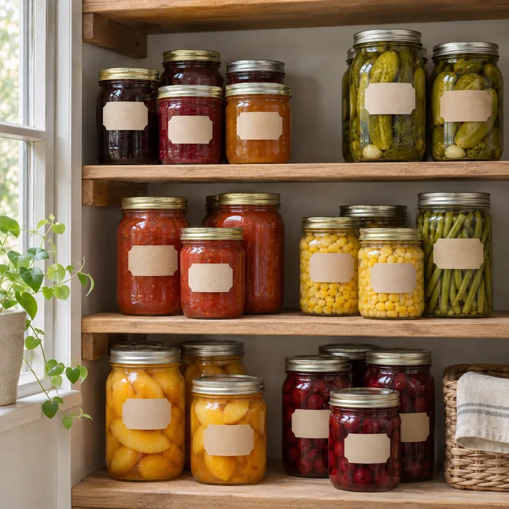

Comment ranger les pots et bocaux dans le placard
Classez les bocaux par type, vérifiez les étiquettes et gardez devant ceux à utiliser en premier.

Regroupez les bocaux et vérifiez les étiquettes
Classez les bocaux prêts à ranger par type, par exemple les confitures et les autres produits en bocal. Vérifiez que le contenu et la date notée se lisent facilement. Si besoin, écrivez aussi la date d’ouverture. Suivez les consignes de conservation du produit.
Placez devant les bocaux à utiliser en premier
Quand vous rangez de nouveaux bocaux, gardez une place visible pour ceux que vous voulez utiliser d’abord. Regardez cette étagère avant d’écrire votre liste. Dans EatMeFirst, vous pouvez noter le nom, la quantité et l’étagère. L’inventaire, la liste et l’enregistrement automatique sont gratuits dans le navigateur, sans installation ni inscription.